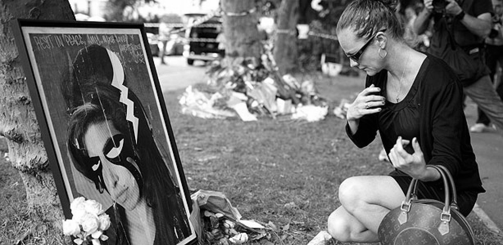

Amy Winehouse
Biografia y Carrera

1983-2001: Primeros años
Amy Jade Winehouse nació el 14 de septiembre de 1983,Notas en el seno de una familia judía y con tradición musical en el jazz. Se crio en los suburbios de Southgate (norte de Londres), junto a su padre Mitchell (conductor de taxi) su madre Janis (farmacéutica)y su hermano mayor Alex.Mitchell le cantaba constantemente éxitos de Frank Sinatra a la joven Winehouse, que pronto empezó a imitar el hábito de su padre hasta tal punto que sus maestros no podían mantenerla callada en clase.Sus padres se divorciaron cuando ella tenía nueve años. En ese tiempo, se inscribió en la Escuela de Teatro de Susi Earnsh, donde estuvo cuatro años. A los diez años, fundó una banda de rap llamada Sweet 'n' Sour. Luego, a los trece, acudió a la Sylvia Young Theatre School, pero fue expulsada tres años más tarde por «no ser aplicada» y hacerse un piercing en la nariz.3 En 1997 apareció en un episodio de The Fast Show, junto con otros estudiantes de la escuela de Sylvia Young. Más tarde asistió al BRIT School en Croydon y también a Ashmole School.
2002: inicios musicales.
Winehouse recibió su primera guitarra a los trece años y comenzó a componer un año más tarde. Al poco tiempo, empezó a actuar en pequeños bares de Londres y más tarde, formó parte de una pequeña banda femenina de jazz. A los 16 años, su novio, el cantante Tyler James, entregó una maqueta suya a un productor, y así Winehouse comenzó su carrera profesional. Firmó su primer contrato musical con Simon Fuller, al que posteriormente renunció en 2002.
Más tarde, un representante de Island/Universal, Darcus Beese, la escuchó cantar cuando el gerente de los hermanos Lewinson le mostró unas producciones grabadas por Winehouse en las que ella era la vocalista principal. Cuando le preguntaron quién era la cantante, el gerente dijo que no lo sabía. Después de decidir que la contrataría, Beese pasó varios meses buscándola para saber quién era. Sin embargo, Winehouse se encontraba grabando canciones, y el encuentro se demoró. Cuando Beese finalmente la conoció, le presentó a su jefe, Nick Gatfield, quien entusiasmado por el talento de la cantante, firmó con ella un contrato editorial con EMI. En ese momento conoció a su futuro productor, Salaam Remi
2003-2005: Frank
Su álbum debut, Frank (titulado así por su admiración a Frank Sinatra), salió a la venta el 20 de octubre de 2003. El disco, producido principalmente por Salaam Remi,
contenía influencias de jazz y, a excepción de dos covers, todas las canciones estaban coescritas por Winehouse. El álbum fue bien recibido por los críticos, quienes compararon su voz con las de Sarah Vaughan y Macy Gray. Winehouse consiguió un disco de platino en el Reino Unido y fue una candidata nominada a los Premios Mercury Music y a los BRIT Awards. En 2004 ganó un Premio Ivor Novello a la Mejor Canción Contemporánea por su sencillo «Stronger Than Me». El mismo año, la cantante se presentó en el Festival de Glastonbury y en el V Festival.
2006-2008: Back to Black y éxito internacional
Amy Winehouse en 2007.
El 30 de octubre de 2006, Winehouse publicó su segundo álbum, Back to Black, que tuvo buena recepción tanto comercial como crítica, y alcanzó el número uno en el Reino Unido. Gracias a este álbum ganó un Brit Award en la categoría de Mejor Artista Británica. En junio de 2007, fue nuevamente nominada a los Mercury Prize por Back to Black, en la categoría de Álbum del año,9 y su venta alcanzó el disco de platino en Estados Unidos. Como broche de oro, consiguió tres nominaciones a los MTV Video Music Awards de 2007.
En enero de 2008 lanzó Back To Black: B-Side, saga del exitoso Back to Black y su primer DVD titulado I Told You I Was Trouble: Live in Londres. Back to Black tuvo un éxito rotundo, y una crítica favorable que le brindó numerosas comparaciones con la «era Motown de R&B». La revista Rolling Stone dijo que, en este álbum, Winehouse desprendía la fuerza de los intérpretes de indie y de hip hop. La revista anglosajona People afirmó que, «Back to Black es un disco mejor cada vez que lo escuchamos». The New Statesmen remarcó que este segundo trabajo era mejor que el primero, refiriéndose a él como «un impresionante trabajo de soul».
Vida personal
Tres años después de su ruptura con Tyler James (2005) y a los 21 años de edad conocería a Blake Fielder-Civil (n. 16 de abril de 1982) mientras pasaba la noche en un bar de la ciudad de Londres. El flechazo entre ambos fue inmediato y aunque cada uno tenía pareja, continuaron con su romance. Por fin algunas semanas después Winehouse rompería con su novio de entonces, George Roberts, y Blake con su novia, y así ambos formalizarían su relación. Más tarde Winehouse se tatuó «Blake» en el pecho, a la altura del corazón. Sin embargo tras varios meses juntos, Blake puso fin a la relación para regresar con su antigua novia, con quien llevaba tiempo engañando a Winehouse. Desde el quiebre, la cantante pasó por un período de consumo de pastillas para la depresión, violentos cambios de humor y pérdida de peso debido a la bulimia en que había recaído producto de su depresión. Finalmente, la condición de salud de Winehouse mejoró en el año 2006 y la plena recuperación coincidió con la grabación de su segundo y último álbum de estudio: Back to Black, dedicado a Blake.
En este período de buena salud física y emocional, Winehouse comenzaría una relación con el también cantante británico Alex Clare. Finalmente la cantante rompió esta relación para darse una segunda oportunidad con el hombre al que consideraba el amor de su vida, Blake Fielder-Civil, con quien se casó en 2007, en Miami. Es entonces cuando Winehouse empieza a consumir drogas duras junto a Fielder-Civil, quien ya era adicto. La vida de Winehouse se vuelve principal objetivo de la prensa rosa debido a los escándalos protagonizados por el tóxico matrimonio, entre ellos un período de agresiones mutuas y consumo excesivo de drogas. En agosto de ese mismo año, Winehouse canceló conciertos en el Reino Unido y resto de Europa argumentando agotamiento y enfermedad. Sin embargo, semanas más tarde, sería hospitalizada de urgencia por una sobredosis de heroína, crack, cocaína, ketamina y alcohol.
En enero de 2008 se difundió un vídeo donde es posible ver a Winehouse fumando crack en su casa. Días después su compañía discográfica anunció que ella ingresaría en un centro de desintoxicación por propia voluntad, para tratar su adicción. En mayo de 2008 Winehouse participó en el festival Rock in Río III, en la ciudad de Lisboa. Con media hora de retraso y ante el desconcierto de sus admiradores, subió al escenario visiblemente alcoholizada, inestable y disfónica.
Finalmente, en julio de 2009, Blake Fielder-Civil -quien cumplía condena en prisión por agresiones, intimidación, chantaje y amenazas al dueño de un local de Londres- presentó una demanda de divorcio contra Winehouse.
El 18 de junio de 2011, la artista realizó un concierto en Belgrado, capital de Serbia, considerado por sus propios admiradores como «desastroso» , «escandaloso» e incluso «el peor concierto jamás visto», pues Amy subió al escenario completamente ebria e incapaz de cantar. La crítica fue tal, que la artista canceló el resto de las funciones, regresando a su hogar antes de lo previsto.
Su muerte El 23 de julio de 2011, sobre las 16:00 horas local BST, Winehouse fue encontrada sin vida en su apartamento en Camden, Londres. Tenía 27 años. La policía británica respondió a una llamada del servicio londinense de ambulancias tras reportes del deceso de una mujer, que fue declarada muerta inmediatamente. Se realizó una investigación para hallar las causas de su muerte, descrita por la policía como inexplicada. Inmediatamente, los medios de comunicación y la muchedumbre se reunieron en los alrededores de la residencia de Winehouse para rendirle honores. Los investigadores forenses entraron en el apartamento una vez que la policía aisló la calle. Su discográfica, Universal, hizo un comunicado público en el que declaraba: «Estamos profundamente afligidos en la pérdida repentina de una artista tan dotada y admirable». El 23 de agosto, la familia de Winehouse dio a conocer un breve comunicado sobre los resultados de las pruebas de toxicología devueltos por las autoridades: «No había drogas ilegales», y la causa de la muerte aún no se pudo determinar. La declaración concluye: «La familia desea dar las gracias a la policía y al juez de instrucción por su investigación exhaustiva y continua para mantenerlos informados durante todo el proceso. Se espera que los resultados de la investigación se publiquen en octubre». En una entrevista en la CNN en septiembre, el padre de Winehouse, quien a su vez se encontraba en proceso de rehabilitación del alcoholismo, sostuvo la teoría de que su muerte pudo producirse por un ataque provocado por las sustancias que le habían prescrito para aliviar los efectos del síndrome de abstinencia del alcohol. «Todo lo que Amy hizo lo hizo en exceso: bebió en exceso y también se desintoxicó en exceso», declaró. El 25 de octubre de 2011 se hizo público el resultado de la autopsia. La forense Suzanne Greenway dijo que «la muerte repentina fue la consecuencia no intencionada» de la gran ingesta de alcohol por parte de la cantante. En su apartamento se encontraron tres botellas de vodka vacías, dos grandes y una pequeña. La investigación forense halló 416 mg de alcohol por decilitro de sangre (416 mg/dl). El límite para conducir en Gran Bretaña es de 80 mg/dl. El patólogo que realizó el examen post mortem, afirmó que 350 mg/dl era considerado un nivel fatal, es decir, que implicaba la muerte. El examen concluyó que los órganos vitales estaban en buen estado, pero que la artista tenía grandes cantidades de alcohol en el sistema, por lo que su respiración podría haberse detenido y habría terminado en un coma. Las pruebas toxicológicas no hallaron en su cuerpo sustancias ilegales cuando murió. Sus restos descansan en el Cementerio de Edgwarebury (Londres)
